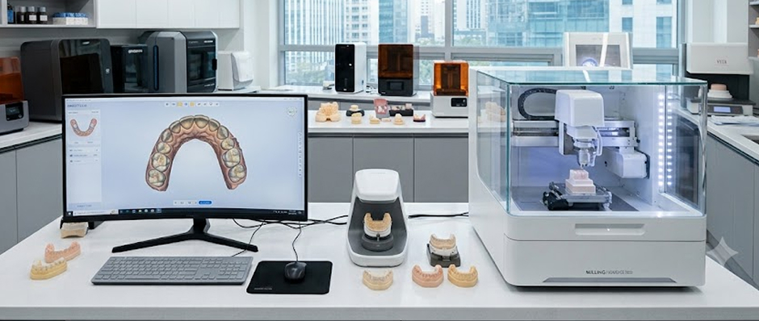
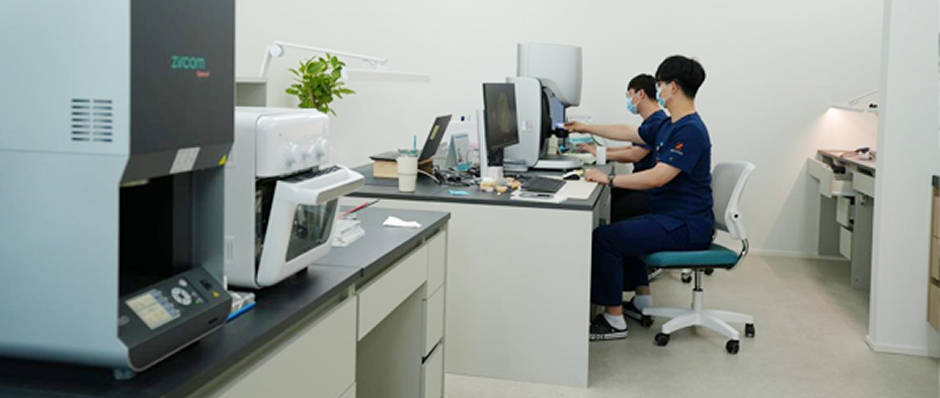
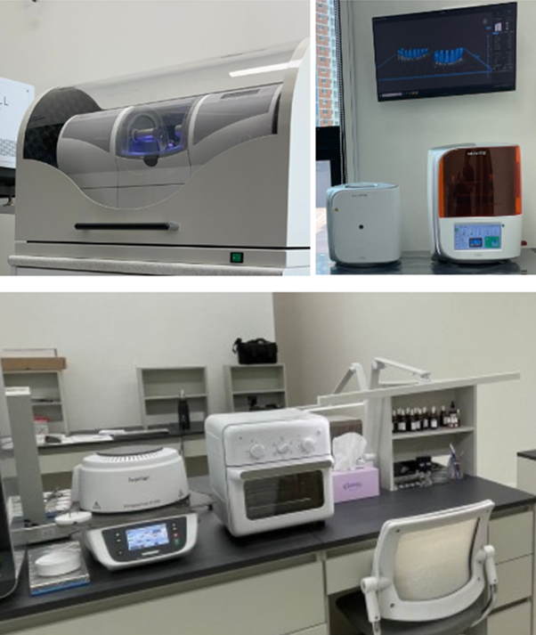
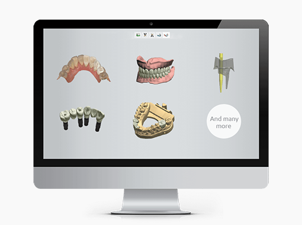
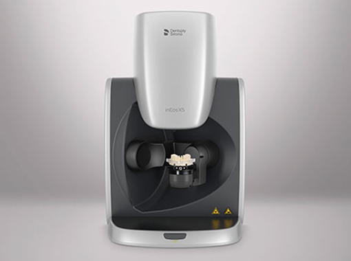
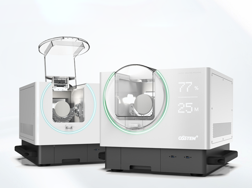
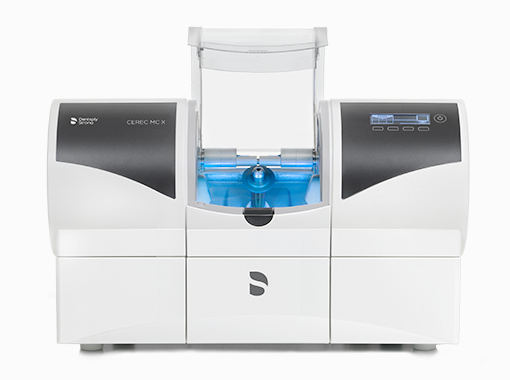
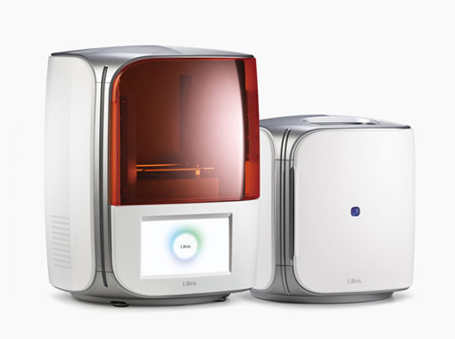

첨단 장비로 정밀하고 빠르게 완성하는 디지털 치과
Digital Lab
첨단 장비로 정밀하고 빠르게 완성하는 디지털 치과
디지털 기공소는 치과 보철물을 제작하는 곳입니다.
전통적인 수작업 기공 방식과 달리, 디지털 기공소에서는 첨단 기술과 장비를 사용하여 더욱 정밀하고 빠르게 보철물을 제작합니다.
치아 모형을 정밀하게 스캔하고, 디지털 환경에서 보철물을 설계하여 크라운, 브릿지, 임플란트 등의 치과용 보철물을 제작할 수 있습니다.

빠른 치료와 완성도 높은 보철물 제작을 위해 <%=m_client_name_s%>은 치과 내 자체 디지털 기공소를 운영하고 있습니다.
첨단 디지털 장비와 기술력으로 오로지 <%=m_client_name_s%>의 기공물만을 전담해서 제작합니다.
풍부한 디지털 임상경험의 의료진과 숙련된 전문 기공사가 협력하여 개개인에 맞는 빠르고 정확성 높은 보철물 제작이 가능합니다.
편안하고 자연스러운 보철물이 완성될 때까지 디테일을 살리는 작업을 반복합니다.


3D CT 의료장비 등을 활용하여 개인의 구강 내 상태를 정확하게 파악하고 맞춤형 치료계획을 세웁니다.
3D 구강스캐너를 활용하여 오차범위를 최소화하고 보다 정밀하게 파악합니다.
CAD/CAM을 활용해 치아를 컴퓨터상으로 디자인하여 치과 보철물을 제작합니다.
실제 치아와 흡사한 보철물을 만들기 위해 컬러링과 표면 카운터링 처리를 합니다.
완성된 보철물을 환자분들에게 정밀하게 장착합니다.
의료진과 기공사의 면밀한 소통으로 만족도 높은 맞춤형 보철물 제작이 가능합니다.
디지털 스캔으로 오차를 최소화하고 검증된 정품 재료를 활용하여 퀄리티 높은 보철물을 제작합니다.
원내 디지털 기공센터에서 직접 제작하므로, 외주 제작과 배송절차를 줄여 치료 기간이 단축됩니다.
원내 치기공사 상주로 보철물 수정과 재제작 등에 빠르고 만족스러운 대응이 가능합니다.

01CAD/CAM

023D 모델 스캐너

035축 밀링기

04세렉 mcx

053D 프린터
환자 맞춤형
정밀 측정과 제작
높은 내구성과
기능성
심미적으로
자연스럽게
착용 시 편안하고
자연스럽게
안전하고
친환경적인 재료
최신 기술로
시간과 비용 절약